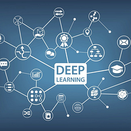

Full Stack Development

Full Stack Development is a term used to describe the development of both the front-end and back-end components of a web application. A full stack developer is a web developer who is familiar with all the layers of a web application and can work on both client-side and server-side development
Artificial Inteligence
Artificial Intelligence (AI) is a rapidly growing field that involves the development of intelligent computer systems that can perform tasks that typically require human intelligence. AI systems can learn, reason, and make decisions, and they are becoming increasingly prevalent in a variety of industries, including healthcare, finance, retail, and transportation.
Data Science

Data Science is a multidisciplinary field that involves the extraction of insights and knowledge from data. It encompasses a range of techniques and tools from statistics, mathematics, computer science, and information science to analyze and interpret complex data. Data Scientists use these insights to help organizations make informed decisions and solve business problems.
Deep Learning
Deep Learning is a subfield of Machine Learning (ML) that involves the use of neural networks with multiple layers to analyze complex data and make predictions or decisions. The goal of deep learning is to build models that can learn and make decisions in a way that mimics the way the human brain works.
Data Mining
Data Mining is the process of extracting valuable insights and knowledge from large amounts of data. It involves the use of algorithms and statistical techniques to discover patterns and relationships in data that can be used to make informed decisions.
Data Structure
Data structures are a fundamental concept in computer science and are used to organize, store, and manage data in a way that is both efficient and effective. There are several different types of data structures, each with its own strengths and weaknesses, making it important to choose the right data structure for a particular problem.
Machine Learning
Machine Learning is a subfield of Artificial Intelligence (AI) that involves the use of algorithms and statistical models to analyze data and make predictions or decisions. The goal of machine learning is to build systems that can learn from data and improve their accuracy over time, without being explicitly programmed to do so.
Hypertext Markup Language - HTML

HTML (Hypertext Markup Language) is a fundamental building block of the internet, used to create and display content on the web. It’s a markup language that allows developers to structure text, images, videos, and other media in a consistent, semantic way.
Cascading Style Sheets - CSS

CSS (Cascading Style Sheets) is a style sheet language used to define the presentation and layout of HTML and XML documents. It’s used to control the appearance of web pages and allows developers to create visually appealing and consistent designs across a website.
JavaScript

JavaScript is a programming language that’s used primarily to create interactive and dynamic web content. It’s a client-side language, meaning it’s executed by the user’s browser rather than on a server, and it’s one of the three core technologies of the World Wide Web, along with HTML and CSS.